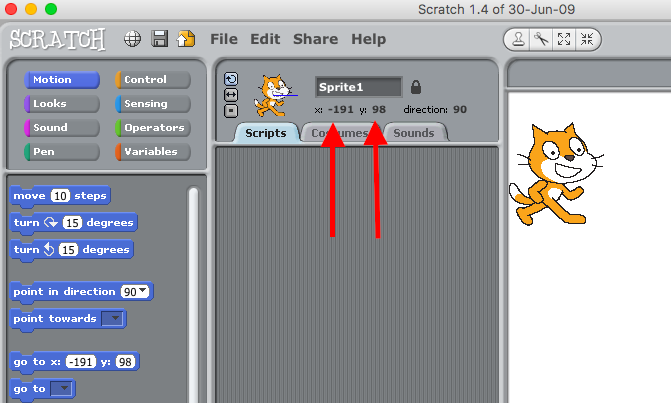
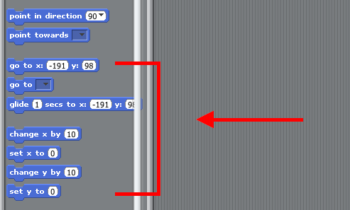

Teaching Point
Students will learn how to make their characters change screens in Scratch.
X Numbers and Y Numbers
We know that we can see the x and y numbers of our characters on the screen. We are going to make them appear on the other side of the screen when they get to the edge. This way we can add levels to our game. What does the x number tell us? What is the x number of our character when we are at the edge of the screen.
We can use an IF Statement to say 'if the characters x number is at the edge of the screen, move it to the other edge of the screen'. We do this with an greater than sign which is in the green menu.
How can we use the x number to decide where to put our character when they cross the edge?
Today's Assignment
Use the X number with an if statement to make your character go to another part of the game when they reach the edge of the screen.
Back to School Portal